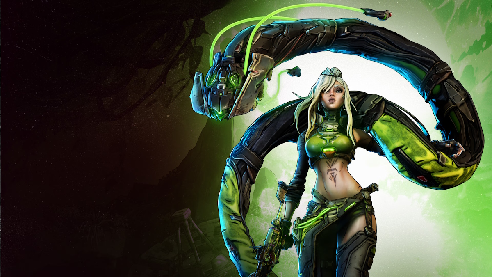
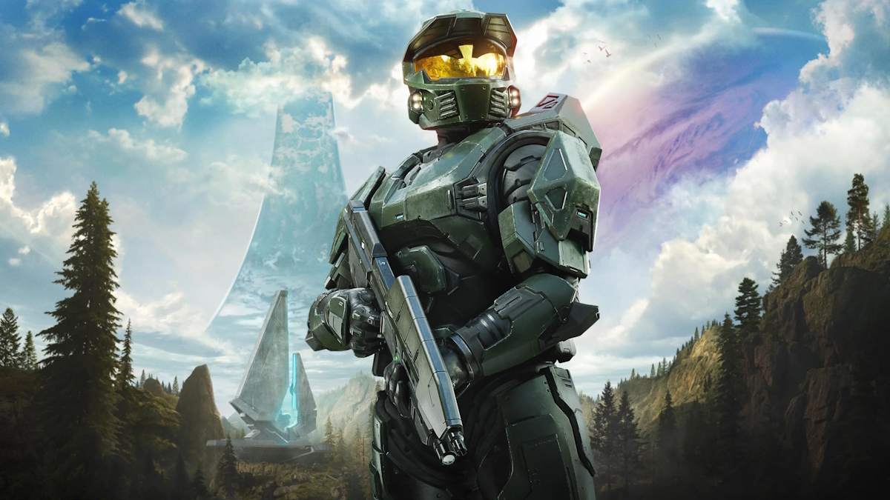
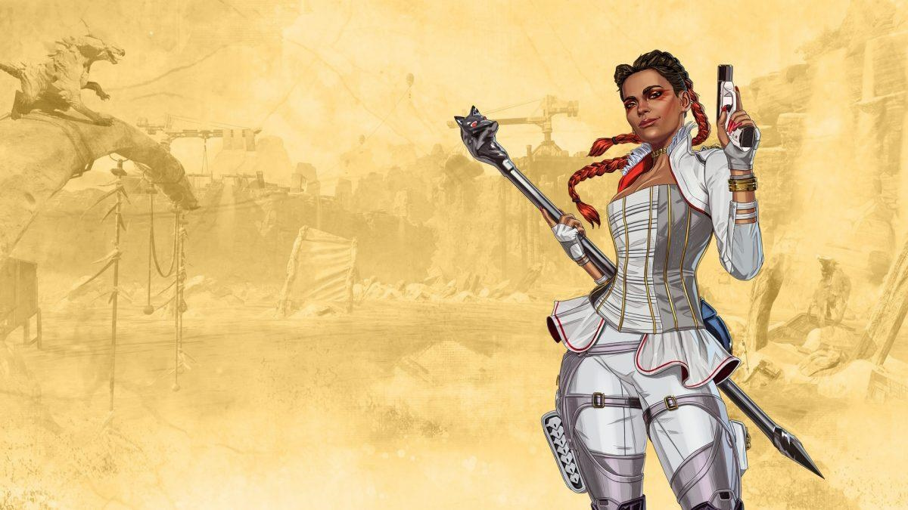
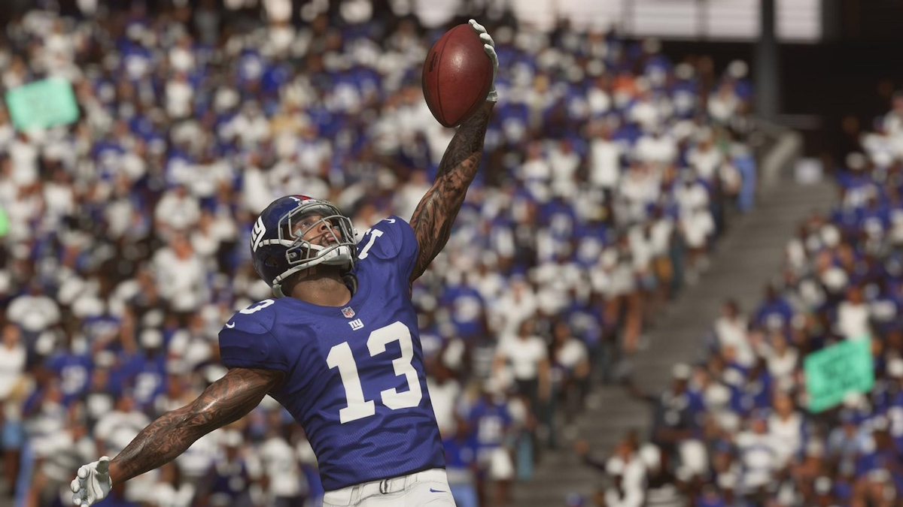
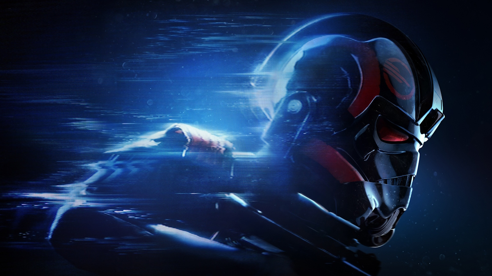
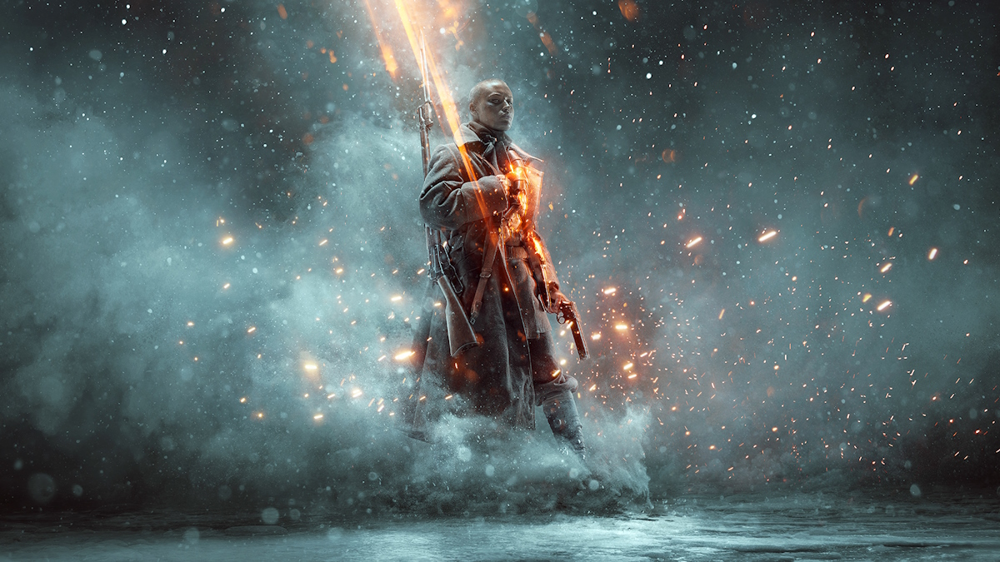

Shipped Titles
-

Borderlands 4
Senior Software Test Engineer
2026
Supported 2K and Gearbox Software across Borderlands 4, FL4K and the Last Resort, Amara and the Vile Shadows, and Loveless DLCs.
Click or tap for behind the credit
Borderlands 4 was a very systems-heavy project. With so many weapons, abilities, effects, and interactions layered together, testing often meant looking beyond whether something simply worked and thinking about how different systems behaved when combined.
Click or tap to return
-

Halo: Campaign Evolved
Senior Software Test Engineer - Embedded DevQA
2025 - 2026
Quality Area Owner for Campaign and Environments, coordinating testing efforts with Halo Studios Design, Art, and Lighting teams and seven international partner studios.
Click or tap for behind the credit
Halo: Campaign Evolved was my first experience seeing a project through from start to ship.
Click or tap to return
-

Apex Legends
Quality Assurance Tester
2019 - 2020
Supported Respawn with functional, regression, and exploratory testing across Xbox, PlayStation, and PC. Served on a dedicated strike team testing Loba ahead of release, identifying and verifying character and gameplay defects and providing feedback.
Click or tap for behind the credit
There was a very real chance I was the first Lifeline main. I was definitely one of the first Loba mains.
Click or tap to return
-
The Sims Mobile
Quality Assurance Tester
2018
Supported Maxis on The Sims Mobile, focusing on stability on Android and iOS, contributing to functional testing and defect identification.
Click or tap for behind the credit
The Sims 4 was almost the first title I ever tested, but that turned out to be the In The Name of the Tsar expansion for Battlefield 1.
Click or tap to return
-

Madden 19
Quality Assurance Tester
2018 - 2019
Supported EA Tiburon on Madden NFL 19 across Xbox, PlayStation, and PC. Conducted functional and regression testing, documented defects, and verified fixes throughout development.
Click or tap for behind the credit
Once a week Madden 19 testers were shoved into what was basically a closet at EA Baton Rouge to playtest early builds of a battle royale game that would become Apex Legends.
Click or tap to return
-

Star Wars: Battlefront II
Quality Assurance Tester
2017 - 2018
Supported DICE on Star Wars Battlefront II with a focus on the single-player campaign across Xbox, PlayStation, and PC. Conducted functional testing, documented gameplay defects, and verified fixes during development.
Click or tap for behind the credit
Alongside testing the launch campaign, the team I was on also tested the campaign DLC and the first set of maps released for The Last Jedi. Because of that I was able to see stills of the movie before it came out!
Click or tap to return
-

Battlefield 1
Quality Assurance Tester
2017
Supported DICE on Battlefield 1: In the Name of the Tsar across Xbox, PlayStation, and PC. Contributed to functional and regression testing of expansion content, identifying and documenting defects throughout development.
Click or tap for behind the credit
Battlefield 1 was the first game I worked on!
Click or tap to return
Experience
Embedded QA & area ownership
Working directly with development teams, with ownership of Campaign and Environments testing on Halo: Campaign Evolved.
Test planning & execution
Creating test plans and specifications, conducting smoke, regression, and exploratory testing, and documenting and verifying defects across console, PC, and mobile.
Coordination & reporting
Coordinating QA efforts across seven international partner studios and reporting testing progress and bug trends to production and area stakeholders.
Let's connect
Interested in working together or connecting about game development? Send me a message below or connect on LinkedIn.